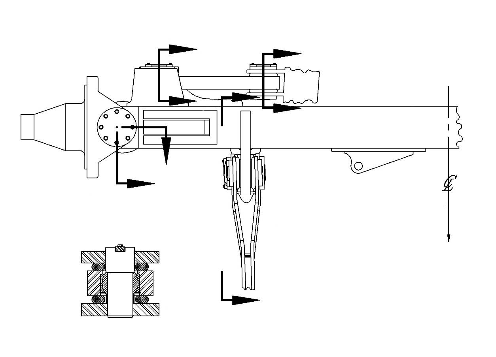
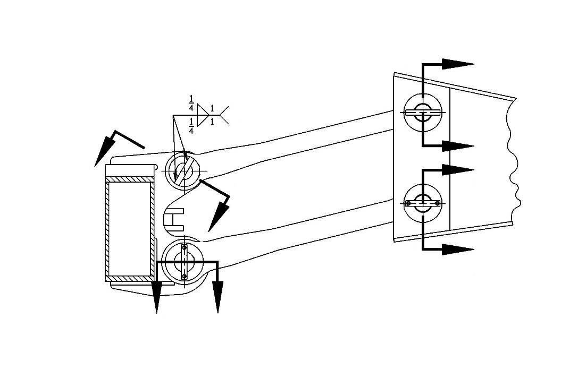
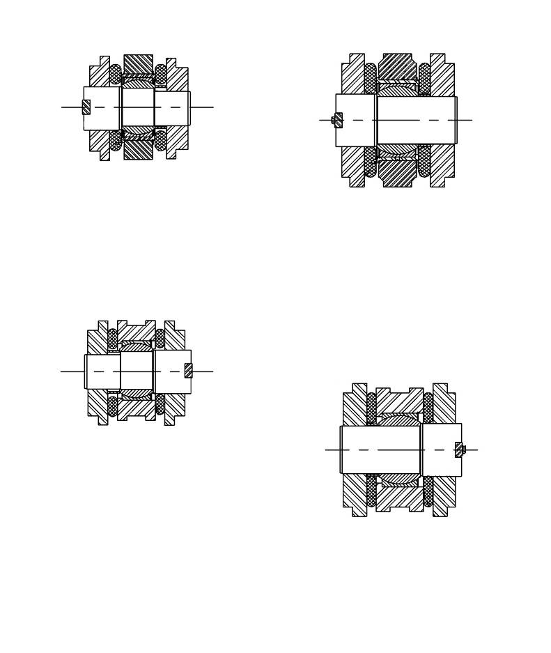
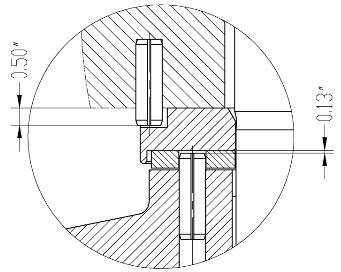
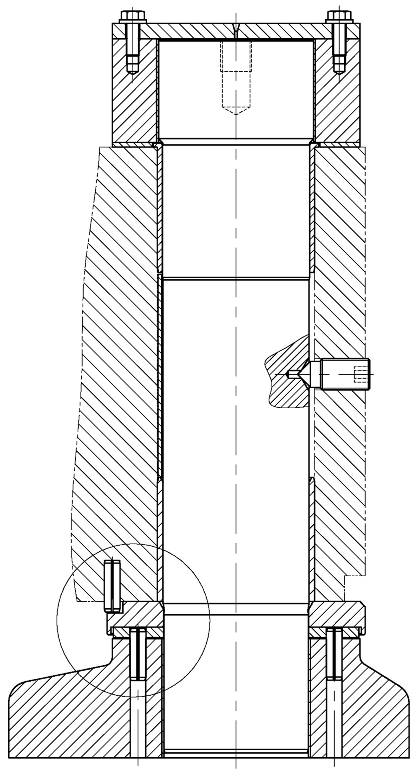

前桥总成. · FRONT AXLE ASSY
Передний мост
Описание и расположение
Передний мост представляет собой коробчатую конструкцию прямоугольного сечения, оба конца изогнуты, расположен между двумя передними колесами в сборе под рамой карьерного самосвала.
Управление
Передний мост является основным конструктивным элементом карьерного самосвала:
1. Размещение точек крепления и опорных точек поворота передних колес в сборе и поворотных кулаков.
2. Размещение ряда точек установки рулевого механизма в сборе.
3. Обеспечивая точку касания цилиндра передней подвески в сборе.
Цилиндр передней подвески в сборе служит для управления качанием переднего моста. Четыре продольные тяги служат для управления движение вперед/назад и вращательным движением. Поперечные тяги служат для управления качанием переднего моста по высоте в сочетании с одновременным ограничением поперечного движения переднего моста.
Техническое обслуживание и регулировка
Проводите периодическое техническое обслуживание переднего моста в соответствии с нижеследующим порядком:
1. Проверить передний мост и продольные тяги на наличие трещин. Отремонтировать в соответствии с порядком сварки конструктивных элементов, указанным в части 200 - «Дополнения».
2. Проверить правильность смазывания ряда штырей и других узлов трения. Устранить проблемы в соответствии с установленными требованиями.
3. Проверьте наличие/отсутствие признаков износа и повреждений шкворня в сборе или ослабления шкворня в сборе. Проверка может производиться невооруженным глазом при обычном осмотре. Рекомендуется проводить тщательный осмотр в течение указанного периода (обычно 500 часов). Можно выполнить операции в соответствии с нижеследующим порядком:
ПРИМЕЧАНИЕ: Такой осмотр может проводиться отдельно или одновременно на передних колесах в соответствии с содержанием проверки и состоянием подъемного оборудования
a. Припаркуйте ТС в безопасном месте. Необходимо надежно удерживать карьерный самосвал в неподвижном состоянии каким-либо другим способом, за исключением кинетического трения тормозной системы. Следует установить шины в положение для езды по прямой, выключить двигатель и главный выключатель.
ПРЕДУПРЕЖДЕНИЕ
Перед приближением к шинам передних колес с ободьями в сборе убедиться в полном сбросе остаточного давления в энергоаккумуляторах рулевого управления.b. Измерение радиального биения шкворня в сборе производится в следующем порядке:
(1) Установите микрометр с внутренней стороны верхнего/нижнего торца поворотного кулака в сборе, измерьте смещение поворотного кулака относительно переднего моста в сборе к центру карьерного самосвала и от него. См. рис. 1, разрез C-C, примечание A.
ПРИМЕЧАНИЕ:
1. При измерении считывание данных с использованием грибовидной микрометрической гораздо более точно. Считывание данных с использованием острой микрометрической гораздо менее точно.
2. Зона касания микрометра должна быть чистой и гладкой, кроме того, должна быть возможность свободного перемещения микрометра в пределах рабочего диапазона.
3. Следует установить начальное показание микрометра на 0 дюймов (мм), это позволяет точно измерить минимальное значение смещения в обоих направлениях в диапазоне 0,040-0,050 дюймов (1,0-1,3 мм).
(2) Поднимать раму или передний мост домкратом или другим подходящим методом без касания с 2 шинами передних колес, колесами или поворотными кулаками в сборе до отрыва шин от земли. Зафиксировать шины, колеса и поворотные кулаки в сборе в этом положении.
(3) Считывайте и записывайте значение смещения, измеренным каждым микрометром.
(a) Если значение каждой измеряемой величины составляет 0,035-0,040 дюйма (0,88-1,0 мм), то это свидетельствует о наличии серьезного износа. Если отсутствуют другие заметные проблемы, то еще можно нормально использовать. Однако рекомендуется более внимательно следить за техническим состоянием и степенью износа карьерного самосвала.
ПРИМЕЧАНИЕ: Как правило, длинный интервал намного короче, чем установленный межповерочный интервал. Например, если установленный межповерочный интервал составляет 500 часов, то следует проверить в соответствии с более коротким интервалом, это зависит от момента начала износа.
(b) Если измеренное значение превышает 0,040 дюйма (1,0 мм), то это свидетельствует о значительном износе, в этом случае следует снять, отремонтировать или заменить сборочную единицу в соответствии с установленными требованиями. Более подробная информация о ремонте приведена в последующих разделах данной части.
ПРЕДУПРЕЖДЕНИЕ
Несвоевременное проведение ремонта компонента может привести к дальнейшему ускорению износа, даже стать причиной возникновения неисправности переднего моста/поворотного кулака в сборе.(4) Если существует необходимость измерения с другой стороны, то следует повторять данную процедуру.
(5) Действия после завершения измерения:
(a) Снимите микрометр.
(b) Снять подушки крепления карьерного самосвала и компонентов.
(c) Опустить карьерный самосвал на землю.
c. Измерение радиального зазоры шкворня в сборе производится в следующем порядке:
ПРИМЕЧАНИЕ: Таким образом можно измерить степень износа упорного кольца в нижней части шкворня и соответствующих частей.
(1) Измерьте щупом зазор между верхней/нижней поверхностью держателя поворотного кулака и поверхностью упорного подшипника. См. рис. 1, разрез C-C, примечание B.
ПРИМЕЧАНИЕ: В целях обеспечения точного измерения, следует аккуратно вставить щуп, чтобы обеспечить вставление щупа в верхнюю часть упорного подшипника и плотное прилегание к шкворню.
(2) Запишите измеренный зазор, включая дату и время выполнения.
(3) Если измеренное значение зазора превышает первоначальное значение зазора плюс 0,160 дюйма (4,05 мм), то следует снять шкворень в сборе, измерить и заменить компонент в соответствии с установленными значениями.
ПРИМЕЧАНИЕ:
1. Следует измерить степень износа сборочной единицы примерно под углом 180°впереди и позади нее.
2. Записанное/регулировочное значение должно быть должно быть ровно среднему значению двух измеряемых величин.
3. При техническом обслуживании и замене компонентов шкворня в сборе записывать первоначально измеренные значения. Если это не так, то регулировочная степень износа не включает в себя первоначально измеренное значение.
d. Действия после завершения измерения:
(1) Снять микрометр.
(2) Снять подушки крепления карьерного самосвала и компонентов.
(3) Опустить карьерный самосвал на землю.
4. Проверить палец продольной тяги на наличие ослабления или повреждений. Отремонтировать или заменить по мене необходимости.
5. Проверить надежность фиксации винта крепления пальца продольной тяги.
Снятие
Снятие переднего моста в сборе производится в следующем порядке:
ПРИМЕЧАНИЕ: При снятии переднего моста не нужно снять передние шины с ободьями и колеса. Однако в рядовом случае желательно снять их, чтобы уменьшить вес и размеры снятой сборочной единицы.
1. Припаркуйте карьерный самосвал в безопасном месте, Необходимо надежно удерживать карьерный самосвал в неподвижном состоянии каким-либо другим способом, за исключением кинетического трения тормозной системы.
2. Поднимать карьерный самосвал, зафиксировать раму и передний мост карьерного самосвала подходящими подкладными клиньями во избежание случайного перемещения карьерного самосвала.
3. Убедиться в нижеследующем:
a. освобождении всех тормозов;
b. полном сбросе давления в энергоаккумуляторах рулевого управления, тормозных энергоаккумуляторах и гидробаке.
ПРЕДУПРЕЖДЕНИЕ
Следует сбросить давление в гидравлической системе рулевого управления и тормозной системе, затем обрабатывать эти компоненты или отсоединить гидравлические соединения.4. Демонтировать шины с ободьями в сборе в соответствии с порядком, указанным в части 070 - «Ходовая система».
5. Демонтировать передние колеса (с тормозами в сборе) в соответствии с порядком, указанным в части 070 - «Ходовая система» и в части 080 - «Тормозная система».
ПРИМЕЧАНИЕ: Этот вариант не является обязательным, однако когда грузоподъемность подъемного оборудования ограничена, это позволит снизить вес перевозимых материалов.
6. Отсоедините гидравлические шланги гидроцилиндра рулевого управления, тормозной системы и автоматической системы смазки, закупорьте их концы пробками или накройте крышками.
7. Полностью сбросить азот и давление предварительного наполнения в цилиндре передней подвески в соответствии с порядком, указанным в части 070 - «Ходовая система».
8. Поднимите карьерный самосвал до тех пор, пока шток цилиндра передней подвески не будет полностью выдвинут, прекратите до момента начала подъема переднего моста, зафиксируйте цилиндр передней подвески в этом положении.
9. Снимите винт, шайбу, защелку и палец с проушины цилиндра подвески переднего моста в соответствии с порядком, указанным в главе 070 «Ходовая система». Зафиксируйте цилиндр подвески должным образом.
10. Снова зафиксировать раму и передний мост в сборе карьерного самосвала.
11. Снимите болт, шайбу и защелку продольной тяги. Снимите защелку продольной тяги переднего моста методом газовой стружки или другим подходящим способом.
12. Снять палец и продольную тягу, отметить их расположение для облечения повторной установки.
ПРЕДУПРЕЖДЕНИЕ
Вес каждой верхней тяги составляет около 425 фунтов (190 кг). Вес каждой нижней тяги составляет около 650 фунтов (230 кг). Вес поперечной тяги составляет около 230 фунтов (105 кг).ПРИМЕЧАНИЕ: При снятии пальца обратите внимание на место снятия пальца, особенно на эксцентриковый палец на верхней тяге в сборе. Это поможет облегчить процесс повторной установки.
13. Снять передний мост из рамы карьерного самосвала.
14. Снять все остальные узлы и детали из переднего моста, которые влияют на ремонт, в соответствии с порядком, указанным в части 050 - «Гидравлическая система», в части 070 - «Ходовая система» или в части 080 - «Тормозная система».
15. Если существует необходимость снятия поворотного кулака, то снять его в соответствии с порядком разборки, указанным в данной части.
Разборка
Снятие поворотного кулака/шкворня в сборе производится в следующем порядке:
1. Зафиксировать передний мост в сборе и поворотный кулак во избежание случайного перемещения компонентов.
2. Снять болт (12) и плоскую шайбу (13) из крышки шкворня (11). Снять крышку шкворня.
3. Снимите установочный винт (14) шкворня (3) с боковой стороны переднего моста.
4. Подпирать поворотный кулак в сборе, извлечь шкворень из переднего моста.
ПРЕДУПРЕЖДЕНИЕ
Вес каждого поворотного кулака составляет около 2000 фунтов (910 кг).5. Снять поворотный кулак и остальные компоненты из переднего моста.
Проверка и ремонт
Ремонт переднего моста в сборе производится в следующем порядке:
1. Проверить продольную тягу, поворотный кулак и передний мост на наличие трещин, рисок или других проблем. Отремонтировать или заменить по мере необходимости. Порядок сварки на месте приведен в части 200 - «Дополнения».
ПРИМЕЧАНИЕ: Не допускается проведение ремонтных и сварочных работ на этих компонентах без согласия работника нашей компании.
2. Проверить подшипник、втулку、механически обработанная поверхность и шкворень на наличие царапин, следов износа или других дефектов. Отремонтировать или заменить по мере необходимости.
ПРИМЕЧАНИЕ: Обратите особое внимание на защиты механически обработанной поверхности от царапин или повреждений.
3. Убедитесь в правильности установки пружинного фиксатора (38) упорного подшипника (8) и держателя подшипника (9), нахождении их в хорошо отремонтированном состоянии. Проводите ремонт в соответствии с требованиями.
Шарикоподшипник продольной тяги
Можно заменить шарикоподшипники на обоих концах продольной тяги в соответствии с нижеследующим порядком:
1. С помощью подходящего инструмента снимите стопорные кольца (30, 32) с подшипника.
2. Снять старый подшипник и заменить его новым.
3. Проверьте шарикоподшипник в расточенном гнезде, в случае обнаружения повреждения, немедленно отремонтируйте. Если существует необходимость замены, следуйте следующему порядку:
a. Удалите поврежденный шарикоподшипник из расточенного гнезда методом электродуговой резки и подходящим инструментом.
b. Проверить состояние растачиваемого отверстия, отремонтировать в соответствии с установленными требованиями.
c. Установите новый шарикоподшипник в соответствии с нижеследующим порядком:
ВАЖНОЕ ПРИМЕЧАНИЕ: Установите шарикоподшипник с натягом любым из перечисленных здесь методов. Метод посадки с охлаждением в жидком азоте является более подходящим методом установки.
Метод охлаждения жидким азотом
ПРЕДУПРЕЖДЕНИЕ
Поскольку температура жидкого азота для охлаждения и охлаждаемых деталей очень низкая, в связи с этим, будьте особенно осторожны при применении этого метода, избегайте контакта с кожей, одеждой или любой частью тела в течение всего рабочего процесса.(a) Проверьте новый шарикоподшипник на наличие повреждений, заусенцев и т.д. Проводите ремонт в соответствии с требованиями.
(b) Поскольку температура жидкого азота очень низкая, следует применять подходящий метод, медленно погрузить подшипник в ванну с жидким азотом.
(c) После полного охлаждения осторожно извлеките его из ванны с жидким азотом и установите в соответствующее гнездо правильным методом.
(d) Пусть шарикоподшипник медленно нагревается до тех пор, пока не достигнет температура, совпадающая с температурой окружающей среды, убедитесь в правильности установки стопорного кольца.
ВАЖНОЕ ПРИМЕЧАНИЕ: Доведение температуры до нормальной методом нагрева может вызвать неравномерное распределение температуры по сечению подшипника и привести к деформации или повреждению.
Метод нагрева
ПРЕДУПРЕЖДЕНИЕ
Поскольку температура подогревающего пламени и нагреваемой детали очень высока, в связи с этим, будьте особенно осторожны при применении этого метода, не прикасайтесь к коже, одежде или другим частям тела в течение всего рабочего процесса.(a) Проверить новую подшипник на наличие повреждений, заусенцев и т.д.. Отремонтировать в соответствии с установленными требованиями.
(b) Поскольку температура рабочей среды очень низкая, в связи с этим, следует принять подходящие меры, требуется снижение температура подшипника до требуемой нормы [от -40 до -70℉ (от -40 до -57℃)].
(c) Равномерно нагрейте гнездо до 300-350°F (150-175°C). Такая температура подходит для установки подшипника.
ВАЖНОЕ ПРИМЕЧАНИЕ: Следует нагревать соответствующие периферийные части в широком диапазоне, чтобы обеспечить равномерный нагрев и равномерное расширение отверстия
(d) После доведения температуры двух компонентов до требуемой нормы осторожно вытащить подшипник из ванной с охлаждающей средой и установить его в соответствующее отверстие надлежащим образом
(e) Пусть подшипник медленно нагревается до температуры, которая совпадает с температурой окружающей среды, убедиться в правильной установке стопорное кольца.
ВАЖНОЕ ПРИМЕЧАНИЕ: Доведение температуры до нормальной методом нагрева может вызвать неравномерное распределение температуры по сечению подшипника и привести к деформации или повреждению.
4. Установите новый подшипник в гнездо в соответствии с нижеследующим порядком:
ВАЖНОЕ ПРИМЕЧАНИЕ: Не допускайте непосредственного соприкосновения шарикоподшипника с сухим льдом и погружения его в жидкий азот. Любое из этих двух действий может привести к изменению металлографических характеристик подшипника, негативному влиянию на дальнейшую сборку и использование.
(a) Проверить новую подшипник на наличие повреждений, заусенцев и т.д.. Отремонтировать в соответствии с установленными требованиями.
(b) Поскольку температура рабочей среды очень низкая, в связи с этим, следует принять подходящие меры, требуется снижение температура подшипника до требуемой нормы [от -40 до -70℉ (от -40 до -57℃)].
(c) После доведения температуры двух компонентов до требуемой нормы осторожно вытащить подшипник из ванной с охлаждающей средой и установить его в соответствующее отверстие надлежащим образом
(d) Пусть подшипник медленно нагревается до температуры, которая совпадает с температурой окружающей среды, убедиться в наличии возможности установки упорной шайбы.
ВАЖНОЕ ПРИМЕЧАНИЕ: Доведение температуры до нормальной методом нагрева может вызвать неравномерное распределение температуры по сечению подшипника и привести к деформации или повреждению.
(e) Установите стопорное кольцо, чтобы зафиксировать подшипник.
Втулка шкворня
Замена верхней и нижней втулок шкворня в сборе производится в следующем порядке:
1. Убедитесь в том, что верхняя втулка (4) снята.
2. Выбейте верхнюю и нижнюю втулки (6 и 7) длинным пробойником, будьте особенно осторожны, избегайте прикасания или разрушения внутренней поверхности отверстия шкворня.
3. Убедитесь в отсутствии выступов, трещин или других дефектов на поверхности внутреннего отверстия шкворня, иначе негативно это повлияет на установку новой втулки.
4. Пусть новая втулка охлаждается сухим льдом или подробным агентом, чтобы уменьшить наружный диаметр втулки.
5. Установите нижнюю втулку (7), сначала вставьте скошенный конец в отверстие (снизу), установите ее должным образом. Конец втулки должен быть заподлицо с отверстием шкворня или немного утоплен в нем.
6. Установите распорную втулку (34), чтобы обходить стык распорной втулки при установке установочного винта (14).
7. Установите верхнюю втулку (6), пусть фланцевая поверхность плотно прилегает к верхнему торцу переднего моста.
ПРИМЕЧАНИЕ: В случае обнаружения заклинивания или ненадлежащей установки любой из верхней и нижней втулок, следует снять ее и повторно отрегулировать температуру, зафиксировать надлежащим образом, в противном случае это может привести к повреждению в процессе снятия/повторной установки.
8. Последующая сборка должна производиться после повышения температуры втулки до комнатной температуры.
Сборка
Сборка поворотного кулака/шкворня в сборе производится в следующем порядке:
1. Отдельно установить верхнюю и нижнюю втулки (4 и 5) на верхнюю и нижнюю части поворотного кулака.
ПРИМЕЧАНИЕ:
a. Нижняя часть нижней втулки (5) должна быть заподлицо с нижней частью поворотного кулака (2).
b. Установите верхнюю втулку (4), стык должен быть направлен внутрь (в сторону к раме). Установите нижнюю втулку (5), стык должен быть направлен наружу (в сторону от рамы).
2. Установите упорное кольцо (10) должным образом.
3. Установите упорный подшипник (8) на держатель подшипника (9), надежно зафиксируйте его тремя пружинными фиксаторами (38).
4. Отрегулируйте положения держателя подшипника (9), поворотного кулака в сборе и переднего моста (1), чтобы они могли располагаться заподлицо друг с другом.
5. Совместите установочное отверстие шкворня (3) с отверстием в боковой части переднего моста. Вставьте шкворень должным образом.
ПРИМЕЧАНИЕ: Обратите особое внимание на защиты механически обработанной поверхности от царапин или повреждений.
6. Убедитесь в том, что зазор между нижним концом выступа шкворня (3) и верхним концом упорной шайбы (10) не превышает 0,065 дюйма (1,65 мм). Если зазор превышает данное значение, то следует снять передний мост и установить держатель подходящей толщины подшипника (9), затем повторяйте предыдущую процедуру сборки.
7. При установке следует нанести герметик Loctite 242 или подобный состав на установочный винт (14). Момент затяжки составляет 500 фут-фунтов (680 Н.м).
ПРИМЕЧАНИЕ:
1. Перед установкой нанести герметик Loctite 242 (или подобный состав) на наружную резьбу 3/4 дюйма (19 мм).
2. После завершения установки установочный винт должен находиться вровень с поверхностью моста [±1/4 дюйма (6,3 мм)].
3. После установки и затяжки установочного винта нанесите Loctite242 (или его эквивалент) по окружности резьбы, чтобы обеспечить надлежащую герметичность и коррозиестойкость.
8. Установить крышку шкворня (11) и зафиксировать ее с помощью болта (12) и шайбы (13).
Установка (см. рис. 1)
Установка переднего моста в сборе производится в следующем порядке:
1. Установите передний мост в сборе под рамой, держите его перпендикулярно продольной балке рамы.
2. Установите начиная с нижней продольной тяги в соответствии с нижеследующим порядком:
a. Закрепите тягу, пусть оба конца направляются к мосту.
b. Переместите радиальную тягу на конец моста.
c. Совместить с отверстием и установить палец (29) продольной тяги.
d. Для установки компонента на конец рамы следует повторять шаг c.
ПРИМЕЧАНИЕ: Следует использовать только унифицированный палец. Эксцентричный палец должен использоваться только в назначенном месте, кроме того, следует установить его в самый конец.
e. Установите прижимную пластину и закрепите ее болтами и шайбами.
3. Установите нижнюю тягу с другой стороны, повторите шаг 2.
4. Установка левой верхней тяги производится в следующем порядке:
a. Закрепите тягу, пусть оба конца направляются к мосту.
b. Переместите радиальную тягу на конец моста.
c. Совместить с отверстием и установить палец (29) продольной тяги.
d. Установить паз прижимной пластины вертикально, установите эксцентриковые пальцы (21) с обоих концов и пусть эксцентриковая часть пальца направляется вверх.
ВАЖНОЕ ПРИМЕЧАНИЕ: В этот момент не нужно установить прижимную пластину.
5. Установите правую верхнюю тягу в соответствии с нижеследующим порядком:
a. Установите эксцентриковый палец на конец рамы согласно шагу 4.
b. Поверните эксцентриковый палец верхней тяги до тех пор, пока не совместится отверстие другой тяги с отверстием пальца, установите эксцентриковый палец.
6. Приварите оба конца прижимной пластины (26) эксцентрикового пальца к выступу отверстия пальца рамы угловым сварным швом длиной 1 дюйм (25мм) на 1/4 дюйма.
7. Установите поперечную тягу согласно шагу 2.
8. Установите пылезащитные кольца (25) с обеих сторон шарикоподшипника. Закрепите упаковочной лентой.
9. Установить цилиндр переднюй подвески в сборе в соответствии с порядком, указанным в части 070 - «Ходовая система».
10. Установить передние колеса с тормозами в сборе (если они были сняты) в соответствии с порядком, указанным в части 070 - «Ходовая система» и в части 080 «Тормозная система».
11. Монтировать шины с ободьями в сборе в соответствии с порядком, указанным в части 070 - «Ходовая система».
12. Проводить повторное наполнение передней подвески в соответствии с порядком, указанным в части 070 - «Ходовая система».
13. Проводить техническое обслуживание и испытания системы рулевого управления и тормозная система в соответствии с порядком, указанным в части 050 - «Гидравлическая система».
14. Уберите клинья и опустите карьерный самосвал на землю.
15. Завершить техническое обслуживание и испытания систем карьерного самосвала.
ПРИМЕЧАНИЕ: Рекомендуется при каждом техническом обслуживании шкворня переднего моста в сборе, особенно при ремонте или замене компонента, следует неоднократно измерить окончательный зазор и использовать его в качестве начальной точки для проверки износа компонента при техническом обслуживании. Более подробная информация приведена в разделе «Техническое обслуживание и регулировка» данной части.
16. Отрегулируйте схождение передних колес переднего моста в соответствии с порядком, в разд. «Рулевой механизм» главы 070 «Ходовая система».
Ходовая система – передний мост
070-0000
Ходовая система – передний мост
070-0000
2
3
Ходовая система – передний мост
070-0000
1
Ходовая система – передний мост
070-0000
2
Ходовая система – передний мост
070-0000
Ходовая система – передний мост
070-0000
8
9
Дополнения - Масса компонентов
200-0090
16 Верхняя часть
15 Нижняя часть
26
см. стр. 2
Разрез А-А
Рама (по образу)
Вид сверху направо
Передок карьерного самосвала
Симметричные линии (за исключением поперечной тяги)
см. стр. 4
36，37，39
36，37，39
36，37，39
2
B
19
25
17
25
27
A
12，13
B
C
C
A
A
A
18
11
26
17
20
19
26
19
1
Спецификация01Передний мост в сборе14Установочный винт 27Втулка02Поворотный кулак в сборе15Нижняя радиальная тяга28Шаровой подшипник03Шкворень16Верхняя радиальная тяга29Палец04Верхняя втулка17Поперечный рычаг тяги30Стопорное кольцо05Нижняя втулка18Шаровой подшипник31Втулка06Верхняя втулка19Радиальный штифт32Стопорное кольцо07Нижняя втулка20Внутреннее стопорное кольцо33Втулка08Упорный подшипник21Эксцентриковый палец34Распорная втулка09Держатель подшипника22Шаровой подшипник35Прижимная пластина10Упорное кольцо23Стопорное кольцо 36Болт11Крышка шкворня24Втулка37Закаленная плоская шайба12Болт (класс 8.8)25Пылезащитное кольцо38Пружинный штифт13Закаленная плоская шайба26Прижимная пластина39Пружинная шайбаРис. 1. Передний мост в сборе (лист 1)
Рис. 1. Передний мост в сборе (лист 2)
Рама (по образу)
см. стр. 3
Типичный
см. стр. 3
см. стр. 3
см. стр. 3
F
F
G
G
H
H
E
E
1
16
36，37，39，26 21
15
36，37，39 35 29
35
36，37
29
26
21
Разрез В-В
Рис. 1. Передний мост в сборе (лист 3)
25 22 18 25
26
21
20 23 16
25 31 28 25
Мост (пример)
29
15
35 30 32
36，37，39
Мост (пример)
Разрез F-F
Разрез E-E
Разрез G-G
Разрез H-H
24 25 18 25
33 25 28 25
16 20 26
21
Рама (по образу)
36，37，39
35
15 30
29
Рама (по образу)
36，37，39
12，13
11
4
10
6
3
34
7
2 5
1 38
9
38
ПРИМЕЧАНИЕ А
ПРИМЕЧАНИЕ B
14
8
ПРИМЕЧАНИЕ А
Разрез J
Разрез C-C
ПРИМЕЧАНИЕ А - место для подключения микрометра для измерения радиального износа
ПРИМЕЧАНИЕ В - точка для измерения радиального износа
см. разрез J
Рис. 1. Передний мост в сборе (лист 4)
Иллюстрации




